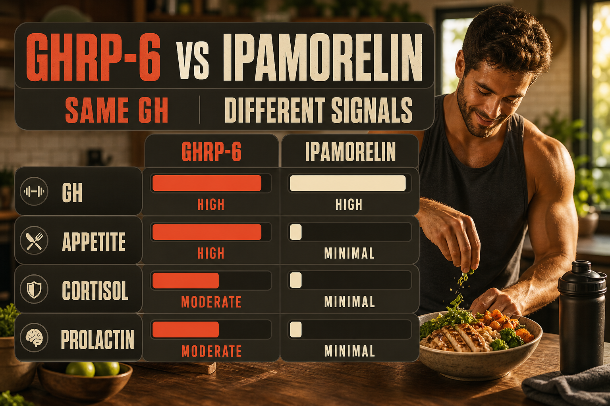

What GHRP-6 Is
GHRP-6 (growth hormone releasing peptide-6) is a synthetic hexapeptide and the original GHRP from which the entire GHRP class was derived. It was developed in the 1980s as researchers were trying to understand the ghrelin receptor system before ghrelin itself was even discovered. GHRP-6 fully activates the GHS-R1a (ghrelin) receptor - it is the most complete ghrelin mimetic of the GHRPs, which accounts for both its GH-stimulating effects and its more pronounced side effect profile compared to Ipamorelin.
The key practical distinction between GHRP-6 and Ipamorelin is GHRP-6's potent appetite stimulation. Where Ipamorelin produces GH release without meaningful appetite change, GHRP-6 produces significant hunger - sometimes described as intense or ravenous - within 30-60 minutes of injection. This appetite stimulation is driven by GHRP-6's fuller ghrelin receptor activation. In the context of muscle building where caloric intake is the goal, this can be advantageous. In the context of weight management or fat loss, it is a significant disadvantage.
GHRP-6 also elevates cortisol and prolactin more than Ipamorelin due to the same full ghrelin receptor activation pathway. For most modern protocols where body composition is the primary goal, Ipamorelin has largely replaced GHRP-6 because of its cleaner profile. However GHRP-6 remains relevant where appetite stimulation is specifically desired - underweight individuals, those recovering from illness, or people who struggle to eat enough during muscle-building phases.
Plain English Version
The Original Tool With a Side Effect That's Sometimes The Point
When researchers were first developing compounds to stimulate GH, they produced GHRP-6. It worked well - meaningful GH release, manageable side effects by the standards of the time. The problem was that it also made people intensely hungry. They called this a side effect and kept working until they produced Ipamorelin, which eliminated the hunger while keeping the GH.
For most people, that was the right direction. But not for everyone.
If you are trying to build mass and struggling to eat enough, the intense hunger that GHRP-6 produces is not a side effect - it is the feature. It drives caloric intake in people whose appetite is suppressed by training stress, life stress, or simply not being a naturally hungry person. The GH pulse happens alongside the hunger, not instead of it.
GHRP-6 is the original tool. It works. It just comes with more than you asked for unless the appetite stimulation is part of what you need.
One sentence: GHRP-6 is the original ghrelin receptor agonist - producing meaningful GH release alongside significant appetite stimulation, making it specifically useful when caloric intake needs a boost.
How To Picture It

How It Works
GHRP-6 fully activates GHS-R1a (ghrelin receptors) in the pituitary, hypothalamus, and vagus nerve. Pituitary activation produces GH release. Hypothalamic and vagal activation produces appetite stimulation, gastric motility changes, and mild HPA axis activation (cortisol elevation approximately 20-50% above baseline). The full ghrelin mimetic profile is broader than Ipamorelin's selective pituitary-only action.
Documented Benefits
comparable to Ipamorelin at equivalent doses
specific value for mass-building phases
Dosing Protocol
| Phase | Dose | Frequency | Timing | Notes |
|---|---|---|---|---|
| Starting | 100mcg | Once daily | Fasted, bedtime | Have food ready for 30-60 min post-injection |
| Standard | 100-200mcg | Once or twice daily | Fasted | Prepare for strong hunger response |
| With CJC-1295 | 100-200mcg | Once or twice daily | Fasted/bedtime | Less common than CJC+Ipa; appetite effect notable |
Cycle 8-12 weeks on, 4 weeks off.
Reconstitution Standard
GR6 (5mg vial) + 2ml BAC water = 2.5mg/ml 100mcg = 4 units | 200mcg = 8 units
Dosage Build-Up Timeline
- Week 1-2: 100mcg once daily - assess hunger and cortisol response
- Week 3-8: 100-200mcg daily or twice daily
- Week 9-12: Reassess; if appetite stimulation is no longer desired, transition to Ipamorelin
- Week 13-16: 4-week off cycle
Common Mistakes
inject 30-60 minutes before a planned meal; do not inject when food is unavailable
appetite stimulation directly opposes caloric restriction goals; use Ipamorelin instead
GHRP-6 elevates cortisol more than Ipamorelin; monitor mood, body fat distribution, and blood sugar if running long cycles
GHRP-6 is inherently less selective; the hunger and cortisol are part of the mechanism
Contraindications And Cautions
appetite stimulation makes GHRP-6 counterproductive for weight management
GH/IGF-1 elevation concern
GH affects insulin sensitivity; cortisol elevation compounds glucose effects
anxiety, adrenal fatigue - monitor carefully
WADA prohibited
What To Track
- Appetite response - timing and intensity of hunger post-injection
- Body weight and composition monthly
- Cortisol symptoms - mood, body fat distribution, energy patterns
- IGF-1 at baseline and 8-12 weeks
- Sleep quality
Stacks Well With
- CJC-1295 No-DAC - dual-pathway GH amplification (less common than CJC+Ipa)
- BPC-157 or KLOW - tissue repair alongside GH
- High-protein caloric surplus diet - the appetite stimulation is most useful here
Sources
- Peptideslabuk GH Secretagogue Comparison 2026. peptideslabuk.com
- Bowers CY et al. GHRP-6 original research. pubmed.ncbi.nlm.nih.gov
- PeakedLabs GH secretagogue overview 2026. peakedlabs.com
- WADA Prohibited List 2025. wada-ama.org
For educational and research documentation purposes only. Not medical advice. Always speak with a qualified healthcare professional before making health decisions.